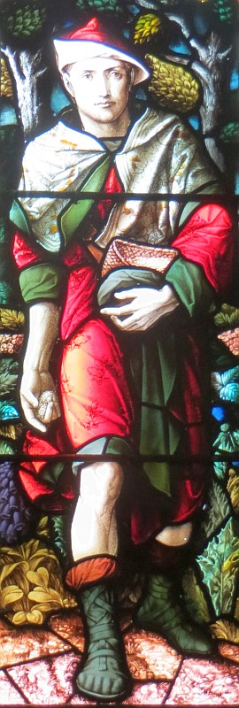
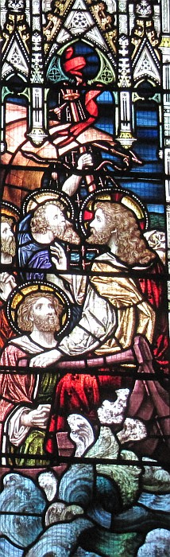
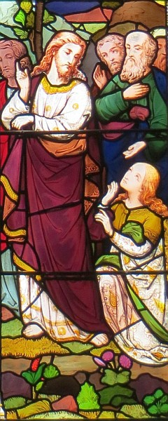

La Bouonne Nouvelle s'lon Luc, Chapitre 8
Vèrsets 1-4
Et i' s'adonnit qu'un mio pus tard, i' 'tait à faithe eune touônnée des villes et villages à seule fîn d'prêchi entouor la bouonne nouvelle du rouoyaume du Bouôn Dgieu, et chenna acanté la Douzaine, et tchiques femmes tch'avait 'té r'dgéthies d'mauvais esprits et maux, Mathie, mênommée la Magdalène, dé tchi sept mauvais esprits avaient 'té envyés hors, et Jeann'ton femme Chuza, l'chein tchi mênageait la maîsonnée à Hérode, et Sûzon, et un tas d'aut's, tchi baillaient d'lus bein pouor l'souongni. Assa, un fliotchet d'monde lus dêhalîdrent dé toutes les villes à seule fîn d'l'êcouter et i' lus racontitch't histouaithe-chîn.

Vèrsets 5-8
"Un s'meux s'en fut s'mer et coumme i' travaillait, y'en avait d'la graine tchi tchit avaû l'quémîn et fut pilvâtchie et fut gaffée par l'ouaîthelîn du ciel. Et y'en avait tchi tchit sus l'rotchi, et quand ou crût, ou fut rigotée. Et y'en avait tchi tchit parmi l's êpîngnes, et quand l's êpîngnes crûtent acanté lyi, i' l'êtranglyîdrent. Et y'en avait tchi tchit sus la bouonne tèrre et crût et baillit du frit acouo chent fais pus." Quand i' dit chennechîn, i' s'êbriyit, "Lé chein tch'a d's ouothelles pouor ouï, qu'i' ouaie!"
Vèrsets 9-15
Et ses approtis li'entchêtîdrent entouor chein qu'la pathabole 'tait pouor dithe. Et i' lus rêponnit, "L'Bouôn Dgieu vos a bailli à saver les s'grets d'san rouoyaume. Mais j'pâle en pathaboles ès aut's: ches gens-là r'gardent mais i' n'vaient goutte; il' êcoutent mais i' n'comprannent janmais. Assa né v'chîn chein qu'la pathabole veurt dithe: la graine est la pathole du Bouôn Dgieu; la graine tchi tchit par lé bord du c'mîn, ch'est les cheins tch'ont ouï la pathole mais v'là tchi veint l'Malîn pouor l'us haler du tchoeu pouor qu'i' n'craient pon et n'aient pon l'salut; la graine tchi tchit sus l'grupé, ch'est les cheins tch'ont atchilyi auve d'la jouaie la pathole, mais n'étant pon bein réchinnés, il' y r'nonchent quand les choses vont mal; la graine tchi tchit parmi les ronches, ch'est les cheins tch'ont êcouté et tch'y continnuent un but mais tchi sont embrontchis par l'train du monde et la richesse et les pliaîthièrs d'la vie et n'èrdonnent rein; la graine tchi tchit dans la bouonne tèrre, ch'est les cheins tch'ont êcouté la pathole, tchi l'ont gardé jouaiyeusement au tchoeu, et tchi porte du bouôn frit à l'avoût.
Vèrsets 16-18
Fis d'âme, quand la veue a 'té alleunmée, n'la couvre atout un bachîn, ni n'la pliaiche souos l'liet, mais nou la pliaiche sus sa tabl'ye à seule fîn qu'les cheins tch'entrent vaient la veue. Ch'est en tchi rein n'est muchi tchi n's'sa pon dêmuchi, et n'y'a pon dé s'gret tchi n's'sa pon dêch'lé. Prannez souain don coumme tchi qu'ous êcoutez, car au chein tch'a i' s'sa donné, et du chein tchi n'a pon s'sa halé même chein qu'i' sembl'ye aver.
Vèrsets 19-21
Assa la méthe à Jésû et ses fréthes vîndrent lé vaie, mais i' n'pûdrent pon lus appréchi d'li par cause du fliotchet d'monde. Nou dit à Jésû, "Ta méthe et tes fréthes sont en d'houors et veulent té vaie."
Mais i' rêponnit, "Ma méthe et mes fréthes sont les cheins tch'êcoutent la Pathole du Bouôn Dgieu et font d'même."

Vèrsets 22-25
I' s'adonnit qu'un jour il embèrtchit dans un baté acanté ses discipl'yes et i' lus dit, "Allons, crouaîsons à l'aut' bord d'chutte mathe." Et i' mîndrent à la vaile et quandi qu'i' vailaient i' s'endormit. Eune tempête dêclianqu'tit sus la mathe et l'baté fut êcliûthé et v'là tchi dangélait. I' lus en fûdrent lé rêvilyi en briyant, "Maît, Maît! J'soummes pouor capsaïzer!" Et i' s'rêvilyit et tanchit l'vent et l'boulais et la tempête tchit et tout s'calmit.
I' lus dit, "Où'est qu'est vot' fouai?"
Ieux, i' 'taient êffrités et êmèrvilyis et lus entré-dîdrent, "Tchi qu'est ch'tî-chîn tchi c'mande même les vents et l'ieau épis i' sont obéissants?"
Vèrsets 26-41
Et i' vîndrent au pays ès Géthasènes tch'est endrait l'Galilée. Un co qu'il avait dêbèrtchi, v'là tchi vînt à li un houmme d'la ville tchi 'tait endémonné d'mauvais esprits et né v'là eune pause qu'il avait 'té d'sabilyi et à d'meuther dans un chînm'tchiéthe au run dé dans eune maîson. Et quand il êpyit Jésû, i' briyit et s'adentit à ses pids et dit, "Pouortchi qu'tu'as eune hyie contré mé, Jésû, fis du pus haut Dgieu? Né m'venge d'aut'!" Ch'est en tchi il avait c'mandé qu'lé mauvais esprit lâtchîsse l'houmme. Par bordée i' l'câfrait et nou l'gardait tout enchaîné, mais i' bûchait ses chaînes et l'mauvais esprit l'cachait hors à la campangne.
Jésû lî dit, "Tch'est qu'est tan nom?"
Et i' dit, "Man nom est Racachie." Ch'est en tchi i' 'tait endémonné par un tas d'mauvais esprits. Et i' lî talbâtîdrent pouor qu'i' n'les envyîsse pon dans l'Creux.
Assa y'avait là l'tou un grand troupé d'bêtes à saie à fouoilli ès côtis, et les mauvais esprits lî d'mandîdrent d'êt' envyés dans ches bêtes, et i' les laîssit y'aller. Les mauvais esprits don lus dêhalîdrent dé l'houmme et lus en fûdrent dans les bêtes à saie. Lé troupé s'arroutit d'eune ièrre ava l'mont dans l'ieau, et touos ieux fûdrent nyés. Et quand les gardeurs dé bêtes vîdrent chein tchi s'tait adonné, i' lus en fûdrent dêliêment pouor rapporter la nouvelle à touos les cheins d'la ville et d'tout l'vaîthinné. Les gens tch'en avaient ouï pâler lus en fûdrent vaie pouor ieux-mêmes, et i' vîndrent à Jésû et vîdrent l'houmme dé tchi les mauvais esprits avaient 'té cachis. Ch't houmme 'tait assis tout paisibliément, rabilyi et dans san bouôn sens, ès pids d'Jésû. Et i' fûdrent êffrités. Les cheins tch'avaient veu coumme tchi qu'l'houmme fut r'dgéthi lus racontîdrent les dêfinnissâles. Et touos les cheins du pays ès Géthasènes lî d'mandîdrent dé s'n aller par cause qu'il' avaient peux. Et i' s'en fut au baté à seule fîn d'r'aller.
Mais l'houmme dé tchi qu'les mauvais esprits avaient 'té cachis lî d'mandit d'pouver aller acanté li. I' l'renvyit en dithant, "Èrva siez té et di au monde entouor toutes les grandes choses qu'lé Bouôn Dgieu a fait pouor té." Et l'houmme s'en r'fut et racontit partoute la ville entouor les grandes choses qué Jésû avait fait pouor li.
Et quand Jésû r'veint, lé monde 'taient raide heutheurs d'l'èrvaie, viyant qu'il' avaient 'té à l'espéther. Épis un houmme tch'avait nom Jairus, un président d'la sŷnnagogue, vînt s'adenter ès pids d'Jésû en lî d'mandant d'aller siez li.
Vèrsets 42-48

Coumme i' s'n'allait, y'avait-i' eune jotchul'lie d'monde lé tou d'li! Et v'là tchi 'tait eune bouonnefemme tch'avait suffâtchi d'eune sangn'nie d'pis eune douzaine d'années. Ouaithe qu'oulle eûsse dêpensé tout san bein sus la doctrinn'nie, n'y'avait fis d'âme tch'avait peu l'èrdgéthi, la bouonnefemme. Ou s'sîlyit driéthe li et marmîngnétit l'ouôlet dé s'n habit. Dé siette sa sangn'nie s'tchit.
Jésû d'mandit, "Tchi qui m'a attouchi?"
Tout l'monde l'èrnyîdrent, épis Pièrre dit, "Maît'! Nou-s'est tchaque et patchi coumme des sardinnes!"
Mais Jésû dit, "Tchitch'un m'a attouchi, véthe: j'en ai ressenti du pouvé tch'a 'té halé d'mé!"
La bouonnefemme rêalîsit qu'ou n'pouvait d'aut' sé muchi, et oulle en avait trémeu et ou vînt s'adenter l'avant à li et ou s'confêssit qu'ou l'avait attouchi d'même et qué v'là tch'avait d'un co r'dgéthi san ma.
I' lî dit, "Ma fil'ye, ta fouai t'a r'dgéthi. Va en paix!"
Vèrsets 49-56
Coumme i' 'tait acouo à pâler, v'là tchi vînt d'siez l'président d'l'assembliée et dit, "Vot' fil'ye est morte; n'talbâtez d'aut' lé Maît'."
Mais Jésû, quand i' ouït ches mots, lî dit, "N'ai pon d'peux, mais ai d'la fouai et ou s'sa r'dgéthie." Et quand il arrivit à la maîson i' n'allouait pon à autchun d'y entrer acanté li, raîque lé Rotchi et Jean et Dgémîn et l'péthe à la fil'ye et sa méthe. Ch'est en tchi l'monde 'taient à plieuther et lamenter pouor lyi, mais i' dit, "Né plieuthez pon, ch'est en tchi ou n'est pon morte: ou raîque dort."
Et i' l'abafouîdrent, viyant qu'i' criyaient pouor dé seux qu'ou 'tait morte.
Mais li, i' lî prînt la main et lî dit, "Ma fil'ye, lève-té!"
Et s'n esprit r'vînt à lyi et ou sé l'vit dêliêment, et i' c'mandit qu'nou li'apportîsse dé tchi à mangi. Et ses péthe et méthe fûdrent êmèrvilyis, mais i' lus c'mandit d'n'en dit mot à fis d'âme entouor chennechîn.
Viyiz étout:
- La Bouonne Nouvelle s'lon Mar, Chapitre 4, vèrsets iii-ix - La Pathabole du s'meux s'lon Mar
- La Bibl'ye
- La Bouonne Nouvelle s'lon Luc: 1
- La Bouonne Nouvelle s'lon Saint Luc, chapitre iun, vèrsets 1-4
- La Bouonne Nouvelle s'lon Luc, Chapitre 1, vèrsets v-xxv
- L'Êvangile sélon Saint Luc, chapitre iun, vèrsets 26-38
- L'Êvangile sélon St.-Luc: chapitre 1 versêts xxvi à xxxviii - eune aut' vèrsion
- L'Êvangile sélon Saint Luc, chapitre iun, vèrsets 26-38 - eune aut' vèrsion
- La Bouonne Nouvelle s'lon Luc, Chapitre 1, vèrsets 39-56
- La Bouonne Nouvelle s'lon Luc: 2
- L'Êvangile sélon St.-Luc: chapitre 2 versêts i à vii
- L'Êvangile sélon St.-Luc, Chapitre deux, Vèrsets 1 à 7- eune aut' vèrsion
- L'Êvangile sélon Saint Luc, chapitre 2, vèrsets viii à xx
- L'Êvangile sélon St.-Luc, Chapitre deux, Vèrsets 8 à 20- eune aut' vèrsion
- L'Êvangile sélon St.-Luc: chapitre 2, versêts viii à xx - eune aut' vèrsion
- L'Êvangile sélon St.-Luc: Chapitre 2, Versêts 8 à 20 - eune aut' vèrsion
- La Bouonne Nouvelle s'lon Luc Chapitre 2, Vèrsets 21-24
- La Bouonne Nouvelle s'lon Luc, Chapitre 2, vèrsets 25-33
- La Bouonne Nouvelle s'lon Luc: 3
- La Bouonne Nouvelle s'lon Luc, Chapitre 3, vèrsets 23 à 38
- La Bouonne Nouvelle s'lon Luc: 4
- La Bouonne Nouvelle s'lon Luc: 5
- La Bouonne Nouvelle s'lon Luc: 6
- La Bouonne Nouvelle s'lon Luc: 7
- La Bouonne Nouvelle s'lon Luc: 9
- La Bouonne Nouvelle s'lon Luc: 10
- Lé Bouôn Samathitain
- La Bouonne Nouvelle s'lon Luc: 11
- La Bouonne Nouvelle s'lon Luc: 12
- La Bouonne Nouvelle s'lon Luc: 13
- Luc: 14
- La Bouonne Nouvelle s'lon Luc, 15
- La Bouonne Nouvelle s'lon Luc, Chapitre 15, vèrsets viii-x
- L'Êfant Prodigue
- La Bouonne Nouvelle s'lon Luc: 16
- La Bouonne Nouvelle s'lon Luc: 17
- La Bouonne Nouvelle s'lon Luc: 18
- La Bouonne Nouvelle s'lon Luc, Chapitre 19
- La Bouonne Nouvelle s'lon Luc, chapitre 19, vêrsets 1-10
- L'Êvangile sélon Saint Luc, chapitre 19, vèrsets 42-44
- La Bouonne Nouvelle s'lon Luc: 20
- La Bouonne Nouvelle s'lon Luc, Chapitre 20, vèrsets 20-26
- La Bouonne Nouvelle s'lon Luc, Chapitre 21
- La Bouonne Nouvelle s'lon Luc: 22
- La Bouonne Nouvelle s'lon Luc, Chapitre 23
- La Bouonne Nouvelle s'lon Luc, Chapitre 24
- La Bouonne Nouvelle s'lon Saint Luc, chapitre 24, vèrsets 36-43
{kind=link}
{kind=link}